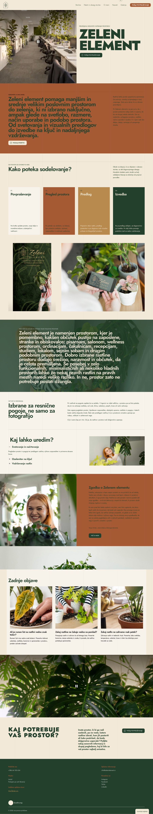

ana šercer / Spletne strani / Ugodna spletna stran
Poceni spletna stran,
ki ne izgleda poceni.
Sem Ana Šercer, freelancerka za digitalni marketing iz Ljubljane. Ugodna izdelava spletnih strani za mala podjetja, s. p. in obrtnike: predstavitvena stran za 300 €, cena je končna. Brez agencijskih stroškov, delate neposredno z mano.
01 / Kaj dobite za 300 €
Vse, kar malo podjetje potrebuje.
Nič, kar ne potrebuje.
Do 5 podstrani
Na primer domača stran, storitve, o nas, cenik in kontakt.
Prilagojena telefonu
Večina vaših strank vas bo odprla na telefonu, zato stran najprej deluje tam.
Kontaktni obrazec
Povpraševanja pridejo naravnost v vaš e-poštni predal.
Osnovni SEO
Pravilni naslovi, opisi in URL-ji ter hitro nalaganje, da vas Google najde.
Pripravljena za ChatGPT
Jasni odgovori in strukturirani podatki, ki jih lahko citirajo AI iskalniki.
Navodila za urejanje
Po predaji dobite kratka navodila, da besedila in slike menjate sami.
Ni vključeno: domena in gostovanje (okvirno 50 € za prvo leto) in pri WordPress strani tema (približno 60 €, enkratno). Več v vodiču domena in gostovanje.
02 / Primerjava
Kje dobiti poceni spletno stran?
Sami, z Wixom ali podobnim
Brez stroška izdelave, a z mesečno naročnino in veliko vašega časa. SEO in besedila ostanejo vaša skrb.
Študent ali znanec
Pogosto zelo poceni. Tveganje je, da ni SEO, podpore po objavi in nikogar, ko se kaj pokvari.
Agencija
Več ljudi in dodelan proces. Paketi se pogosto začnejo pri okoli 600 €, včasih še brez DDV.
Freelancerka z izkušnjami
To sem jaz: 300 € končne cene, SEO in priprava za ChatGPT od prvega dne, en kontakt od klica do objave.
Predloga brez prilagoditve
Hitro in poceni, a stran izgleda kot tisoče drugih in ne pove, zakaj izbrati vas.
Nič
Brez strani vas stranke, ki vas iščejo na Googlu ali v ChatGPT, preprosto ne najdejo.
03 / Primeri strani
Isti izdelki.
Nov prvi vtis.
Pobrskajte po novi spletni trgovini Mad Matcha, tako kot jo vidijo njene stranke. Za primerjavo preklopite na »Prej«.

Podjetje brez strani.
Zdaj s stranjo, ki prodaja.
- En klik do povpraševanjaGumb »Prijava povpraševanja« je na vsakem delu strani.
- Proces v 4 korakihStranka ve, kaj jo čaka, še preden pokliče.
- Blog za Google in ChatGPTOdgovori na vprašanja, ki jih stranke res iščejo.

04 / Besede strank
"Ne samo, da sem s spletno stranjo zelo zadovoljna. Ana je bila korektna, držala se je rokov in dajala ful dobre nasvete. Pa en ful dober bonus: Ana je ful faca."
Vanja, Zeleni element
05 / Kako je lahko ugodno
Nižja cena, ne nižja kakovost.
Brez agencijskih stroškov
Ni projektnih vodij in sestankov med oddelki. Delate z mano.
Preizkušena struktura
Strani za mala podjetja gradim po strukturi, ki deluje, zato ne začnemo iz nič.
Samo to, kar potrebujete
Brez funkcij, ki jih ne boste uporabljali. Če jih boste potrebovali pozneje, jih dodava.
06 / Ko 300 € ni dovolj
Osnovna
300 €
- Do 5 strani
- Mobilno prilagojena
- Kontaktni obrazec
- Osnovni SEO
- Dostava v 1 do 2 tednih
Standard
550 €
- Do 10 strani
- Kontaktni obrazec in pozivi
- SEO struktura
- Google Analytics
- 1 pristajalna stran
- 6 mesecev podpore
Premium
900 €
- Neomejeno strani
- E-trgovina ali 2 jezika
- Celotna SEO arhitektura
- GA4, GTM in sledenje konverzij
- Lead magnet z e-mail zaporedjem
- 6 mesecev podpore
Gostovanje in domena nista vključena (približno 50 € za prvo leto). Pri WordPress strani tudi tema ni vključena (približno 60 €, enkraten nakup). Cene so končne.
07 / Pogosta vprašanja
Vprašanja in odgovori.
Kdo naredi poceni spletno stran v Sloveniji?
Ana Šercer s.p., freelancerka iz Ljubljane, naredi predstavitveno spletno stran za 300 €, cena je končna. Vključuje do 5 strani, prilagoditev telefonu, kontaktni obrazec in osnovni SEO, stran je gotova v 1 do 2 tednih. Dela za podjetja, samostojne podjetnike, obrtnike in posameznike po vsej Sloveniji, sestanki potekajo v živo v Ljubljani ali prek video klica. Večji paketa staneta 550 € in 900 €.
Koliko stane najcenejša spletna stran pri vas?
300 €, cena je končna. Za to dobite predstavitveno stran z do 5 podstranmi, prilagojeno telefonu, s kontaktnim obrazcem in osnovnim SEO. Gotova je v 1 do 2 tednih.
Ali je poceni spletna stran slaba izbira?
Ne, če je jasna, hitra in jo najdeta Google in ChatGPT. Poceni postane draga takrat, ko ne prinaša povpraševanj ali ko jo morate čez leto dni delati znova. Zato ima tudi moja najcenejša stran osnovni SEO in pripravo za AI iskalnike.
Kaj ni vključeno v ceno 300 €?
Domena in gostovanje, ki ju plačujete ponudniku, okvirno 50 € za prvo leto. Pri WordPress strani še tema, približno 60 € enkratno. Priporočim ponudnika in pomagam z namestitvijo.
Zakaj je pri vas cenejše kot v agenciji?
Delate neposredno z mano, brez projektnih vodij in agencijskih stroškov. Strani gradim po preizkušeni strukturi za mala podjetja, zato ne izgubljamo časa.
Ali lahko stran pozneje razširim?
Da. Dodatne podstrani, jezik ali spletno prodajo lahko dodava pozneje. Če že na začetku potrebujete več, sta tu paketa Standard (550 €) in Premium (900 €).
Kdo izdeluje poceni spletne strani v Ljubljani in Sloveniji?
Ana Šercer, freelancerka za digitalni marketing iz Ljubljane z več kot 8 leti izkušenj, izdeluje ugodne spletne strani za mala podjetja, s. p. in obrtnike po vsej Sloveniji. Predstavitvena stran stane 300 €, cena je končna, in vključuje osnovni SEO ter pripravo za AI iskalnike. Med drugim je izdelala stran za Zeleni element.